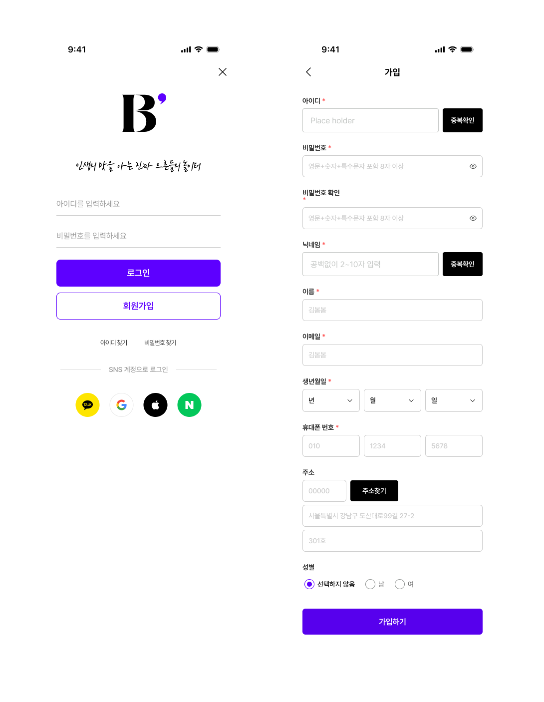
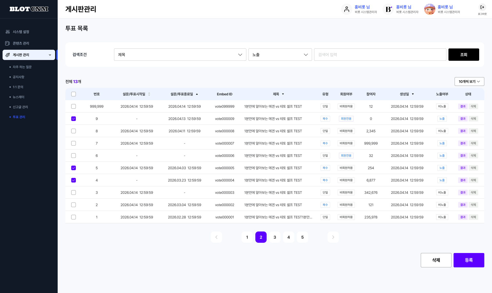
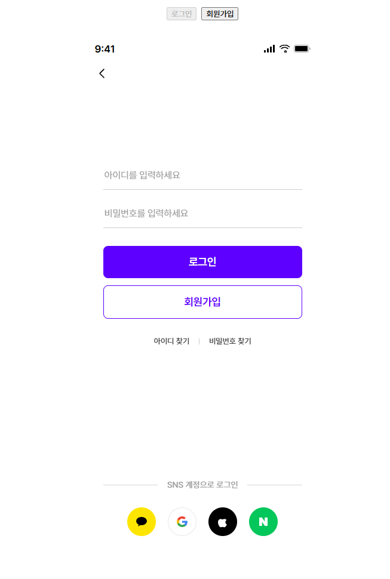
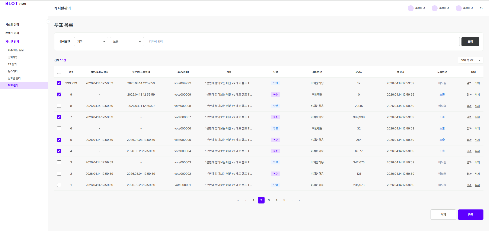
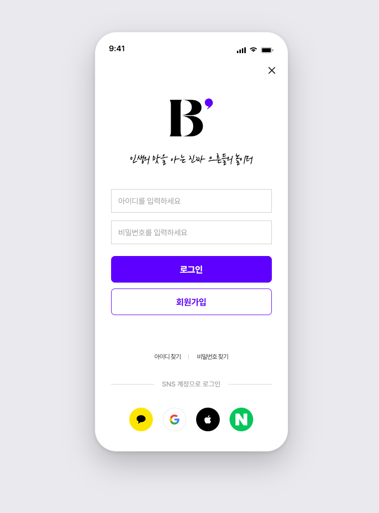
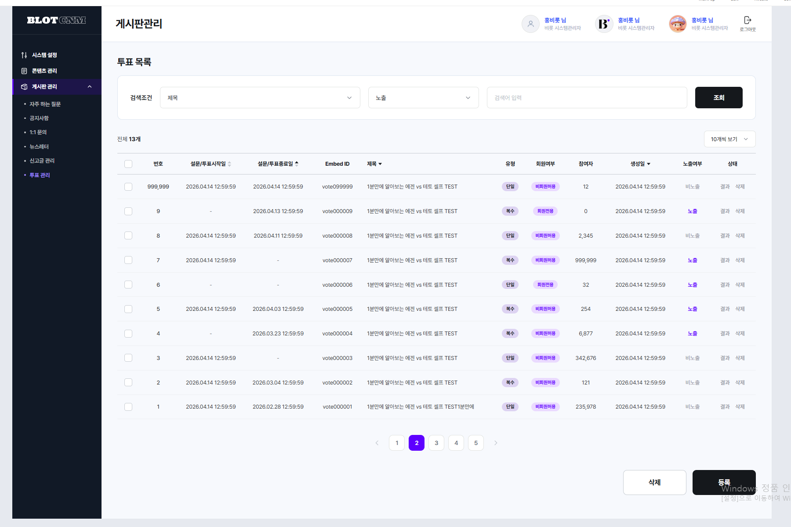

Figma 디자인을 기반으로 AI를 활용한 코드 생성 가능성을 검증하고, 실제 퍼블리싱 업무에 적용 가능한 수준인지 확인하였다.
현 시점에서는 Claude Design을 우선 활용하고, 향후 필요 시 MCP 기반 워크플로우를 검토하는 방안을 권장함.
| 비교 항목 | MCP + Claude Code | Claude Design |
|---|---|---|
| 초기 설정 · 도입 비용 | 어려움 (환경 구축 필요) | 쉬움 (즉시 활용) |
| 학습 · 운영 부담 | 높음 | 낮음 |
| 생성 속도 | 빠름 | 매우 빠름 |
| UI 재현도 (기대 대비) | 보통 | 높음 |
| 후속 수정량 | 보통 | 적음 |
| 코드 품질 | 높음 | 보통 |
| 프로젝트 이해 | 높음 | 낮음 |
| 컴포넌트 재사용 | 우수 | 부족 |
| 유지보수 | 우수 | 보통 |
| 디자인 시스템 활용 | 가능 | 제한적 |
| 실서비스 적용 | 적합 | 수정 필요 |
| 현 실무 즉시 활용도 | 보통 | 높음 |
※ accent = 우위 · 주황 = 보통/제한 · 빨강 = 열위. 평가는 직접 테스트 기준.
※ Claude Code는 코드 구조·확장성에서, Claude Design은 도입 비용·재현도·즉시 활용성에서 우위. 현 실무 환경 기준 종합 우선순위는 Claude Design.
| 구분 | Figma MCP | Figma Dev Mode |
|---|---|---|
| 코드 생성 | AI가 컨텍스트를 읽고 실제 코드 생성 | 수치 확인 후 개발자가 직접 코딩 |
| 기존 코드 통합 | 코드베이스와 연동해 기존 컴포넌트 재사용 가능 | 독립적인 코드 스니펫만 제공 |
| 워크플로우 | Claude Code 안에서 전체 구현까지 완결 | Figma 앱 ↔ 에디터 왔다갔다 필요 |
| 반복 작업 | "수정된 디자인 반영해줘"로 즉시 업데이트 | 변경사항마다 수동으로 수치 재확인 필요 |
| 플랜 요구사항 | 원격 서버: 모든 플랜 (무료 포함, 단 월 6회 제한) | Dev 또는 Full 시트 (유료) |
※ MCP는 AI가 디자인 컨텍스트를 직접 읽어 코드까지 완결, Dev Mode는 수치 참조 후 수동 코딩 방식.



테스트 URL [결과물 URL 1]

테스트 URL [결과물 URL 2]
그림 1. Claude Code - 실제 렌더링 결과.

테스트 URL [결과물 URL 1]

테스트 URL [결과물 URL 2]
그림 2. Claude Design — 실제 렌더링 결과.
Figma 구조 데이터를 직접 활용하는 MCP 방식이 가장 높은 생산성을 제공할 것으로 예상하였다.
현재 조직의 업무 환경에서는 Claude Design이 더 높은 실효성을 보였다.
빠르게 화면을 만드는 데는 유용함. 다만 실서비스 코드로 활용하기에는 구조 및 재사용성 측면에서 추가 작업이 필요함.
초기 설정 비용은 존재하지만, 프로젝트 구조와 디자인 시스템을 함께 고려할 수 있어 실제 서비스 개발 및 유지보수에 적합함.
Claude Design은 "빠른 프로토타이핑 도구"에, Figma MCP + Claude Code는 "실제 개발 생산성 향상 도구"에 가까움. 조직 차원의 도입을 고려한다면 Figma MCP 기반 워크플로우가 장기적으로 더 높은 효율과 유지보수성을 제공할 것으로 판단됨.
해당 도구들을 검토해 보았으나 실무 적용성은 낮았으며, 높은 퀄리티의 산출물을 얻기 위해서는 유료 버전이 필요한 것으로 확인되었다.
컴포넌트 기준이 명확해야 AI 결과 품질이 향상됨.
현재 기준 AI는 보조 도구로 활용하는 것이 적절함.